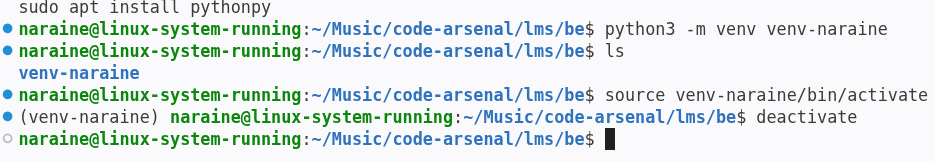
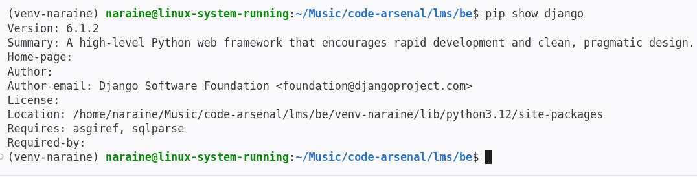

Hardwares
Python Installation
-
Python 3.0 released on 03-12-2008 which is around 18 years
-
sudo apt install python3 && python3 --version or -V
-
Latest Apt stable Version is Python 3.12.3 [as of 30-10-2026]
3.X.X - Major Version Release
X.12.X - Minor Releases or Feature release within the major version
X.X.3 - Patch release or bug fix release inside the minor release
-
sudo apt install python3-pip python3-venv -y
-
pip means pip installs packages for python | standard package manager for python
-
python3 -m venv --help | If the list is shown venv is installed
-
python3 -m pip --version or pip --version or pip -V | To check pip version
-
python3 -m venv venv-naraine | create virtual environment in your backend folder
-
pip install package-name | global installation
-
What if i want to install package inside a specific project folder | first create a virtual environment
& what ever install stays inside the folder.
The role of -m: Running python -m pip install package-name makes sure that if you have a
project-specific
environment activated, the package goes there and doesn't leak into your global system files.
If you run pip install without activating your virtual environment (venv), the package will be
installed globally on your system, completely bypassing your project environment.
-
Activate the virtual environment -> source venv-naraine/bin/activate -> (venv-folder-name) will be
visible -> deactivate to kill the venv running

-
python3 -m pip install django && pip show django | Installing django
-
pip freeze -> Generating environment snapshots (requirements.txt) | package==version | pip install -r requirements.txt -> we can install multiple package inside a single file
-
pip list -> just printing the installed packages inside terminal

-
django-admin startproject be . | create an admin backend
-
create a requirements.txt file inside /lms/be | list all packages==version format inside requirements.txt file
-
if venv is activated no need to type python3 -m => pip install -r requirements.txt